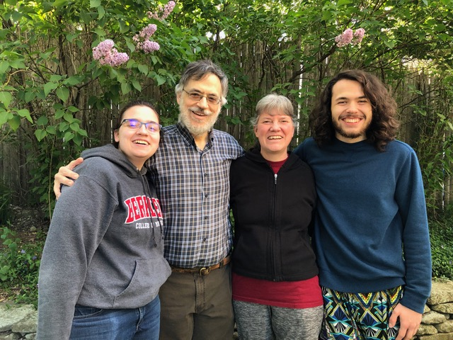

Meet Massachusetts Homeschoolers: The Yeracaris Family
Reflections on a Homeschooling Adventure
By Janet Yeracaris
When my husband and I got married, we bought a house in a town with excellent schools, fully intending to have our kids educated by the public system. By the time we had two actual children, and I was seeing how they were growing and learning, how creative and quick and inventive they could be, I thought, We’ll see how this school thing goes.
I knew that most schools, regardless of how well funded, are very box-like, and there is a great deal of fitting in
that must be done to be successful in that environment. Sure enough, as each of them started elementary school, it became clear to me that they were likely to thrive being cut loose to learn in their own time and in their own way. I already knew other homeschoolers, and the leap to a home-based education was not a big one. We left the box behind and set off for adventure.
Our town took their school system very seriously, and I felt the need to write good reports, but we were pretty much taking an unschooling
approach to the kids’ education. I’m not that big on structure for its own sake, but I wanted a way to keep better track of what we were doing. I made a weekly chart of subject areas the schools would theoretically cover (math, history, language arts, etc., taken from the school district’s website), and every day, as we hacked and slashed our way through our lives, I would write down anything we did that fit into one of those categories. I also had a big miscellaneous
category, where I’d put things I thought were beneficial but that didn’t fit into the school system’s list—making up alphabets and maps and games; attending theater, music and dance events, as audience members and participants; going on field trips to candy factories, dairy farms, public utility facilities; and so much more.
We followed our interests day-to-day, with me, as the homeschooling parent,
occasionally pressing some program or outing on the kids, although never anything they really resisted doing. Every year, when it came time to write my homeschooling report for the school district, I’d tally it all up, and somehow, miraculously, we would have done useful work in pretty much every area of the curriculum.
Some years we made kind of a weak showing in one area or another, but there were always compensating strengths, areas in which the kids were excelling well beyond what they might be doing in a school classroom. I was rather amazed and surprised every year—we were enjoying our lives and getting the job done on paper.
It was crystal clear to me that some concerns people often raise around homeschooling were utter non-issues. Socialization? They were spending time with kids of all ages and with adults, at park days and outings and other gatherings of homeschoolers and of other family friends. They were getting the most thorough and organic socialization I could imagine. The school setup—with kids sorted into groups by age, with adult oversight that is often too stringent, often too lax—does not happen naturally in life, and the evidence is mounting that leaving this much socialization to the vagaries of peer interactions is not beneficial. My kids learned to take each person on their own merits, staying open to finding out who each person is, what they can do, and what is special about them, without much concern about their age.
Still, what parent doesn’t worry about whether we’re doing what’s best, making good choices, tending to everyone’s needs? I fretted along the way about not doing enough of this or enough of that. I had long lists of resources and brilliant ideas. I wanted them to learn another language when they were young. I had a list of field trips that was pages long. We tried to do everything, but, just like they say, it’s not possible. I regretted missed opportunities, wondered whether we were choosing the best trade-offs, fretted that perhaps we were too busy and needed to do less. It felt like part of the job to worry.
We’re not at the end of the story yet, but now that my son is graduating from college and my daughter is halfway through her college education, I feel safe beginning to assess the results. Both kids are interested in a wide variety of subjects, and they continue to be curious, self-motivated learners. They know themselves well and have developed excellent strengths in particular pursuits; they have a good sense for their own learning styles and are inhabiting the world with a balance of confidence and open-mindedness. We enjoy each other’s company, as we have all along.
I have few regrets about how our homeschooling adventure played out. Mostly, I wish I had worried less along the way.
Janet enjoys cobbling a life together with many kinds of activities (some of which are on hiatus at the moment): folk dancing and singing, hosting house concerts, nonprofit arts board work, knitting, cooking, gardening. Homeschooling lined up very well with her (non-existent) long-term career goals.